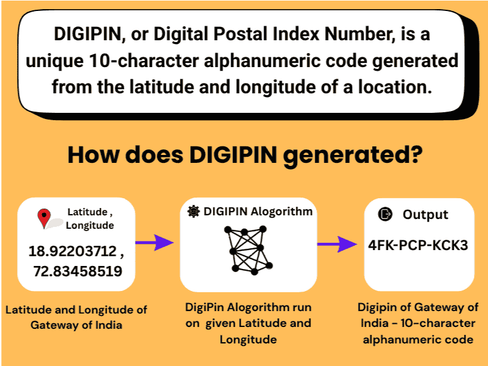
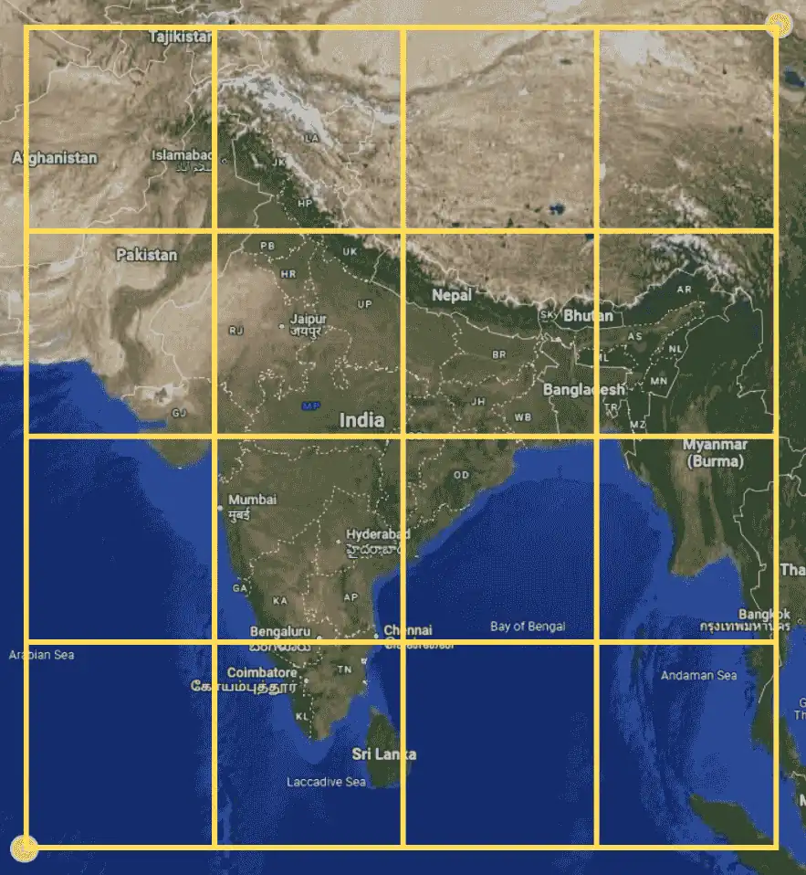
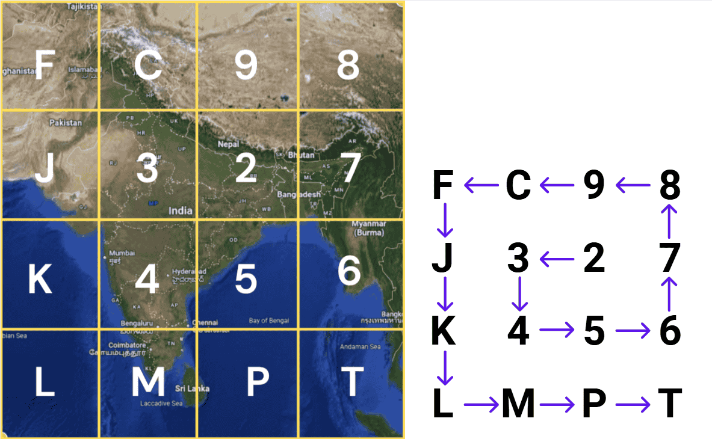
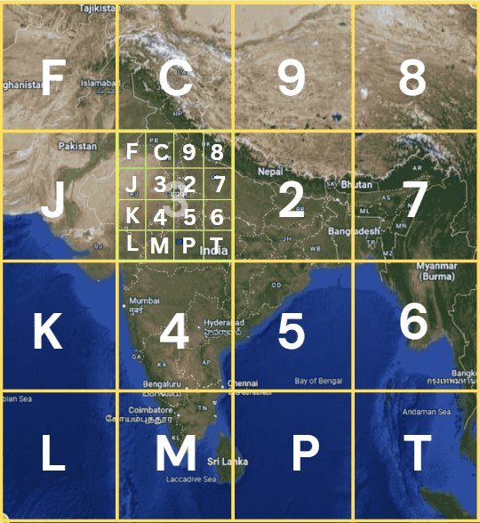
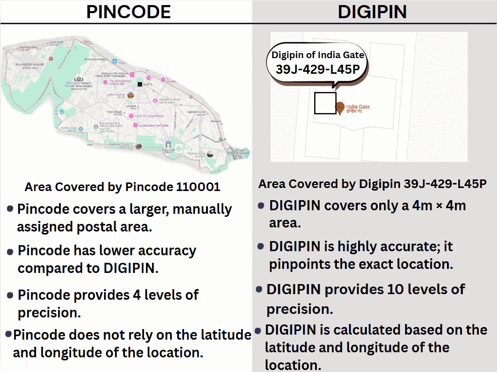
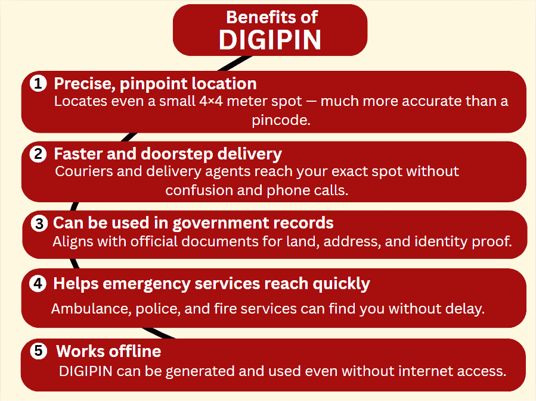

DIGIPIN (Digital Postal Index Number) is a new digital addressing system that converts your exact location (latitude & longitude) into a unique and compact 10-character code. This code is easy to share, remember, and use—like a digital PIN code for your current location.

What is DIGIPIN
Instructions to Get Your DIGIPIN
Follow these simple steps to find your location's DIGIPin instantly:
Click the "Show my DIGIPIN" button above.
When prompted by your browser, click "Allow" or "Yes" to share you location.
We'll use your coordinates to calculate your DIGIPIN and display it right here.
How is DIGIPIN Calculated?
DIGIPIN is generated using a 4x4 grid system applied recursively to the map of India:
India’s geographical bounds are divided into 4 rows × 4 columns.

DIGIPIN Bounding on map
Based on your GPS location, the system picks a character from a DIGIPIN grid like:

DIGIPIN grid layout
The selected grid is subdivided again into 4x4 smaller cells.

DIGIPIN Bounding on map
This process repeats 10 times, generating a unique string like: 4FK-PCP-KCK3
Each level zooms into your location with higher accuracy.
Who developed DIGIPIN?
DIGIPIN (Digital Postal Index Number) was developed by the Department of Posts (India Post) in collaboration with IIT Hyderabad and the National Remote Sensing Centre (NRSC) of ISRO
How is DIGIPIN different from PINCODE?
DIGIPIN is a precise digital address based on a 4x4 grid system, calculated using your exact latitude and longitude. Unlike traditional PINCODEs that cover large postal areas and are manually assigned, a DIGIPIN is unique to each specific location—down to a few meters. While PINCODEs are useful for broad delivery zones, DIGIPINs enable pinpoint accuracy, making them ideal for logistics, e-commerce, emergency services, and future-ready smart addressing systems.

How is digipin different from pincode
Whats are benefits of DIGIPIN?
India has over 1.4 billion people and many places with similar names. Traditional pincodes cover large areas, making it hard to locate exact addresses.
DIGIPIN gives every location a unique digital code based on latitude and longitude. It helps in faster deliveries, better emergency response, and accurate navigation.

Benefits of DIGIPIN
Frequently Asked Questions
How is DIGIPIN different from PINCODE?
Unlike traditional PINCODEs that cover large postal areas and are manually assigned, a DIGIPIN is unique to each specific location - down to a few meters, enable pinpoint accuracy, making them ideal for logistics, e-commerce, emergency services and future-ready smart addressing systems.